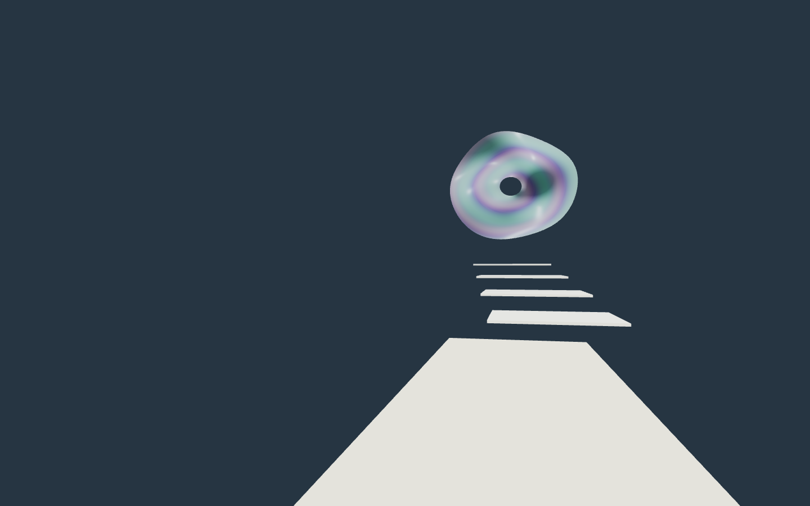

先比較字的秩序，再決定要改多少。三個方向沿用現有宋體骨架，英文維持穩定；點選任一版本，可在下方查看入口情境。這是獨立比較稿，正式首頁保持原版。
放回入口看
C 微錯位 × 單一間隙
完整出現 → 尚未下移 → 齊打開細縫 → 靜止

間隙美術館INTERVAL
INAUGURAL EXHIBITION ／ 首展 2026
A World Still Aligning
一座漂浮在無盡暮色中的美術館。
每個展廳，都遵守一種不同的物理規則。
此輪為排字與筆畫間隙的方向稿，尚未逐筆重繪字形。字體沿用網站宋體設定，顯示會隨裝置字體略有不同；定案後可製成固定輪廓的向量標準字，再精修小尺寸版本。